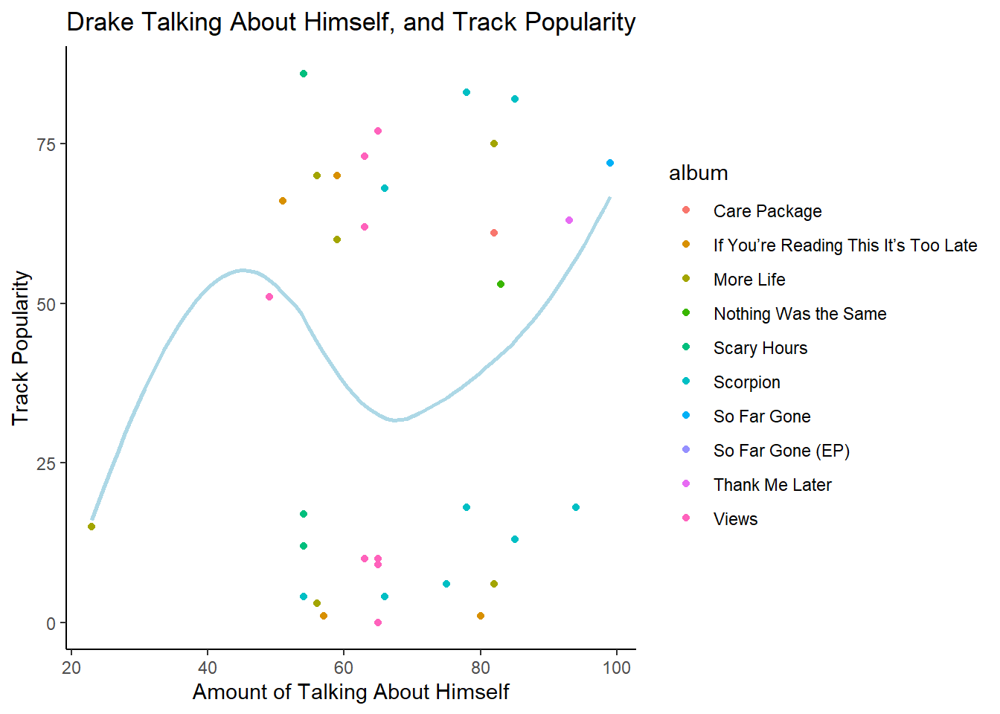

You will find a data set containing string data. This could be newspaper articles, tweets, songs, plays, movie reviews, or anything else you can imagine. Then you will answer questions of interest and tell a story about your data using string and regular expression skills you have developed.
Your story must contain the following elements:
at least 3 str_ functions
at least 3 regular expressions
at least 2 illustrative, well-labeled plots or tables
a description of what insights can be gained from your plots and tables
Analyzing The Highest Grossing Artists of The Last 50 Years
In this project I am going to be looking at the Spotify data for some of the highest selling and most influential artists of the past 50 years. The purpose of this project is to use analytics from Spotify to examine how popular music has changed since 1970. The first step in this project was creating a quality database. To create such a database, I simply filtered in the data of the four highest selling artists of each decade, who also had more than 5 songs in the Spotify database. As shown in the code below a simple dplyr filter function was used to yield the proper data sets.
library(readr)library(RTextTools) # may have to install first
Warning: package 'RTextTools' was built under R version 4.3.3
Warning: There was 1 warning in `filter()`.
ℹ In argument: `track_artist == c("Michael Jackson", "U2", "Queen", "Prince")`.
Caused by warning in `track_artist == c("Michael Jackson", "U2", "Queen", "Prince")`:
! longer object length is not a multiple of shorter object length
Warning: There was 1 warning in `filter()`.
ℹ In argument: `==...`.
Caused by warning in `track_artist == c("Mariah Carey", "Whitney Houston", "Nirvana", "Metallica")`:
! longer object length is not a multiple of shorter object length
Warning: There was 1 warning in `filter()`.
ℹ In argument: `track_artist == c("Eminem", "Coldplay", "Britney Spears",
"Beyoncé")`.
Caused by warning in `track_artist == c("Eminem", "Coldplay", "Britney Spears", "Beyoncé")`:
! longer object length is not a multiple of shorter object length
Warning: There was 1 warning in `filter()`.
ℹ In argument: `track_artist == c("Adele", "Justin Bieber", "Taylor Swift",
"Drake")`.
Caused by warning in `track_artist == c("Adele", "Justin Bieber", "Taylor Swift", "Drake")`:
! longer object length is not a multiple of shorter object length
Each of those data sets were then merged together into one tibble, labeled spot_dat. The first question approached in this study was how has the relationship between a song’s acousticness and its success changed over the years. The code to generate a result required the quick use of an str_extract to create a decade variable for each song. This allowed for the release date to be a lot less continuous than it was originally, and allowed me to create finite groups. The data was then cleaned up, and displayed in a scatter plot. Each point represents one song from the decade. The red lines represent a linear regression done on each decades data, representing the general trend.
As it can be seen in this chart, the relationship between acousticness and popularity of a song seem to have a slightly positive correlation. With an exception of the 70’s a more acoustic pop song tends to lead to a more popular song. Especially in the 2000’s that seems to be extremely apparent. However, there is more to note from this chart. In the 70’s the distribution between very acoustic songs and not so acoustic songs tends to be equal. Then as time goes on, and technology surrounding music production gets better the overall acousticness of pop music starts to fall off. With an all time low in the 90’s and 2000’s. However, in the 2000’s the strong upward trend of acousticness and popularity becomes more apparent. That trend, even if socially subconscious led to a return in acoustic music for the top artists of the 2010’s, as the once extremely uneven distribution starts to even out again among the globes top artists.
The next piece of study was examining how musical keys have shifted in popular music over the past 50 years. First if you are unaware of the idea of musical keys here is a resource to learn what keys are; https://www.classicfm.com/discover-music/music-theory/what-are-musical-keys/. This is an interesting topic because the key of a song can tell listeners a lot about the potential emotions an artist is trying to evoke. The key can also at times be a representation of the technicality of a song. To create this visualization I used the same str_extract function to create decade, then grouped each decade into parings. From there a bar chart was generated to properly visualize the prevalence of each key.
spot_dat|>mutate(year=str_extract(track_album_release_date, "\\d{4,}"))|>mutate(decade=str_extract(year, "^\\d\\d\\d"))|>mutate(decade =case_when( decade=="197"~"70's & 80's", decade=="198"~"70's & 80's", decade=="199"~"90's & 00's", decade=="200"~"90's & 00's", decade=="201"~"10's & 20's", decade=="202"~"10's & 20's", ) )|>mutate(decade=fct_relevel(factor(decade), "70's & 80's", "90's & 00's"))|>ggplot(aes(x= key, fill= track_popularity))+geom_bar(fill="Light blue")+facet_wrap(~decade)+labs(x="Key", y="Count", title="Prevelence of Each Key in Different Time Periods", subtitle="")
Based on the results of these bar plots it does appear that the keys of popular music have changed in the past 50 years. In the 70’s and 80’s it is clear that the two most dominant keys in popular music was the 2nd key and the 9th key. However in the 80’s and 90’s keys started to become a lot more even. The prevalence of key 2 and 9 started to disappear and key 1 started to become more popular. Then through the 2000’s and into the 2010’s key’s 0, 1, and 7 started to become a lot more common in the song of popular artists. This visualization shows how the keys of pop music have clearly shifted in the past 50 years.
Analyzing Drake’s Use of Words in His Popular Music
For the second part of this project, the songs of rapper and popstar Drake were observed. Specifically the lyrics to his most popular music was scraped to observe how the use of his talking about himself affects the music’s popularity. Drake mentions multiple times in his discography that he doesn’t enjoy to talk about himself, but that’s what the “people” like to listen to. This chart attempts to quantify that claim from the rapper. First a dataset of Drake lyrics were scraped, and cleaned using str_replace to allow for the merging of the lyric data and spotify data. Then using a left join the sets were merged together. An str_count command was utilized to count the number of times in his songs Drake uses specific words to refer to himself. The words that were counted were I, me, my, myself, and Drake, these were labeled in the variable “Self_absorption. A scatter plot was used to visualize the relationship between the self absorption and the tracks popularity.
Rows: 290 Columns: 5
── Column specification ────────────────────────────────────────────────────────
Delimiter: ","
chr (5): album, lyrics_title, lyrics_url, lyrics, track_views
ℹ Use `spec()` to retrieve the full column specification for this data.
ℹ Specify the column types or set `show_col_types = FALSE` to quiet this message.
drake_data <-drake_data|>mutate(track_name=str_replace(lyrics_title, "\\s*Lyrics$",""))joined_drake <-spot_dat |>filter(track_artist=="Drake")|>left_join(drake_data, by ="track_name")
Warning in left_join(filter(spot_dat, track_artist == "Drake"), drake_data, : Detected an unexpected many-to-many relationship between `x` and `y`.
ℹ Row 4 of `x` matches multiple rows in `y`.
ℹ Row 112 of `y` matches multiple rows in `x`.
ℹ If a many-to-many relationship is expected, set `relationship =
"many-to-many"` to silence this warning.
joined_drake|>filter(!is.na(lyrics_title))|>mutate(self_absorption=str_count(lyrics,"(I)|([Mm]e)|([Mm]yself)|([Mm]y)|(Drake)"))|>select(track_name, self_absorption, track_popularity, album)|>ggplot(aes(x= self_absorption, y= track_popularity))+geom_point(aes(color= album))+geom_smooth( se=F, color="Light Blue")+labs(title="Drake Talking About Himself, and Track Popularity", x="Amount of Talking About Himself", y="Track Popularity")+theme_classic()
`geom_smooth()` using method = 'loess' and formula = 'y ~ x'

Results show two things. First in Drake’s music he likes to talk about himself. There was only one song in which he did not uses self absorption language less than 40 times, which was surprising to me. Second the regression shows the potential for a trend between self absorption and popularity, but I would consider the trend to appear trivial. In order to know with certainty a statistical test would need to be ran to test if the regression is significant, but based simply on the visualization I would argue that Drake doesn’t talk about himself because the people want him to, but because he just enjoys to brag about his success.